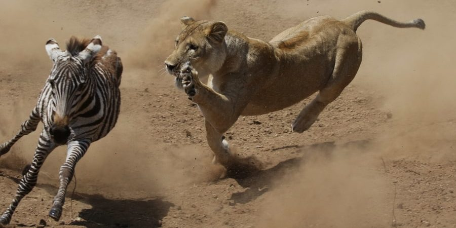
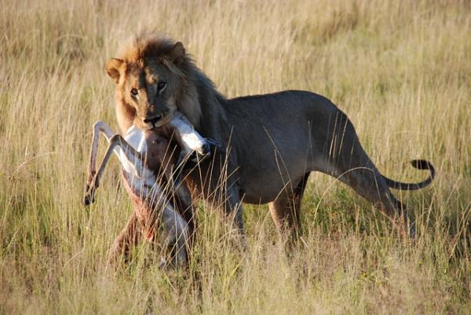
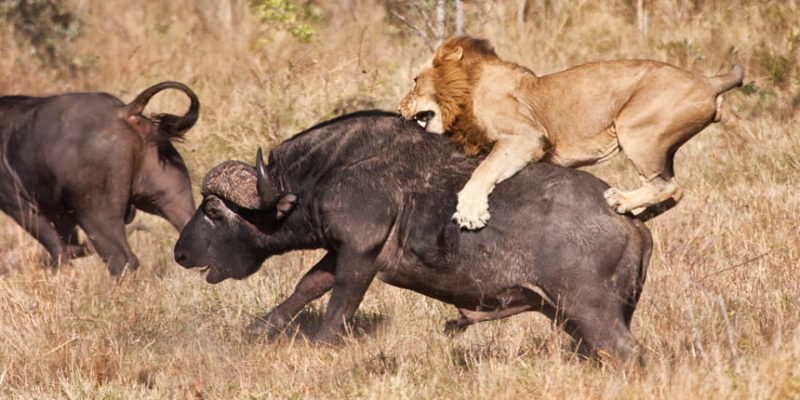
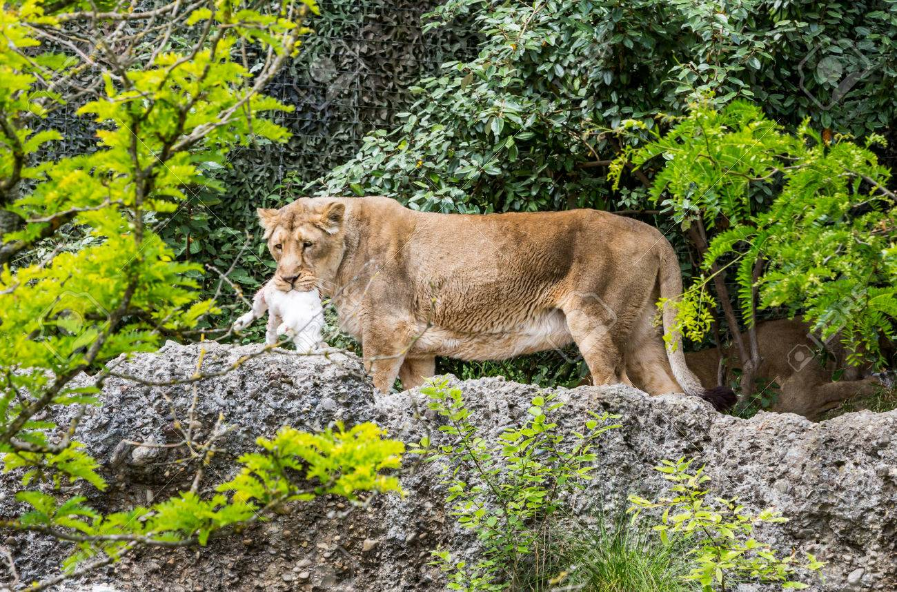
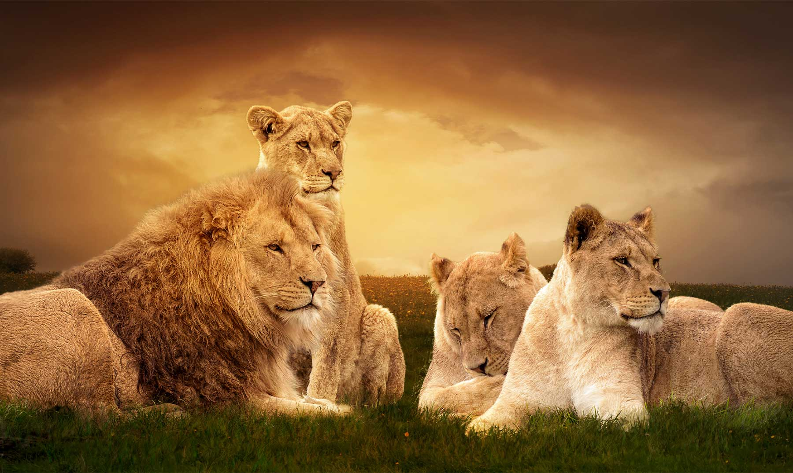
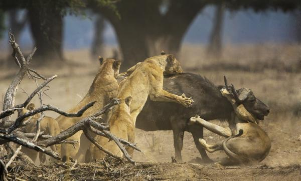
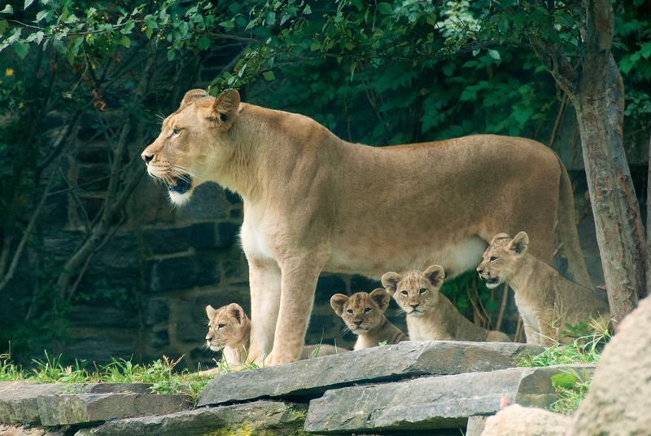

Territorios en África
Los leones viven principalmente en sabanas, praderas y regiones semidesérticas. Se distribuyen por el África subsahariana, aunque su territorio se ha reducido considerablemente en los últimos siglos.
Descubre el estilo de vida del rey de la sabana

Los leones viven principalmente en sabanas, praderas y regiones semidesérticas. Se distribuyen por el África subsahariana, aunque su territorio se ha reducido considerablemente en los últimos siglos.
Los leones son carnívoros y su dieta incluye principalmente grandes herbívoros como cebras, antílopes y búfalos. Las leonas suelen encargarse de la caza en grupo, lo que mejora la eficacia.
Sin embargo, también se sabe que cazan animales más pequeños, como liebres y aves, cuando es necesario. Estos majestuosos depredadores dependen en gran medida de sus extraordinarias habilidades de caza y de los esfuerzos coordinados de su manada para conseguir alimento, lo que garantiza la supervivencia y la fortaleza de su grupo.
“El león es uno de los pocos felinos que cazan en manada para maximizar el éxito.”
Los leones viven en grupos llamados manadas, que pueden incluir hasta 30 miembros. Este comportamiento social es inusual entre los felinos, que normalmente son solitarios.
Las leonas son las principales responsables de la caza. Utilizan estrategias de cooperación para atrapar presas grandes, como ñus, cebras o búfalos. Una parte del grupo se encarga de asustar o acorralar a la presa, mientras que otras le cortan el paso y la derriban.
En las hembras existe una jerarquía basada en la edad y la experiencia. Los machos, por otro lado, deben competir entre ellos por el dominio de la manada. Generalmente, un grupo de machos jóvenes forma una coalición que lucha por tomar el control de una manada y mantenerlo durante algunos años.
Una característica destacada de los leones es el cuidado colectivo de las crías. Las leonas sincronizan los nacimientos y permiten que sus cachorros se alimenten de cualquier hembra lactante. Esto fortalece la cohesión del grupo y mejora la supervivencia de los cachorros.
Los machos adultos tienen la responsabilidad de proteger el territorio de la manada frente a otras coaliciones. Para ello, marcan el territorio con orina, heces y rugidos. Los rugidos son una forma efectiva de comunicación a larga distancia y sirven también para intimidar a posibles invasores.
Cuando una nueva coalición de machos toma el control de una manada, suele matar a las crías existentes. Este comportamiento, conocido como infanticidio, tiene una función reproductiva: al eliminar a las crías del macho anterior, las hembras entran nuevamente en celo, permitiendo que los nuevos líderes se reproduzcan.